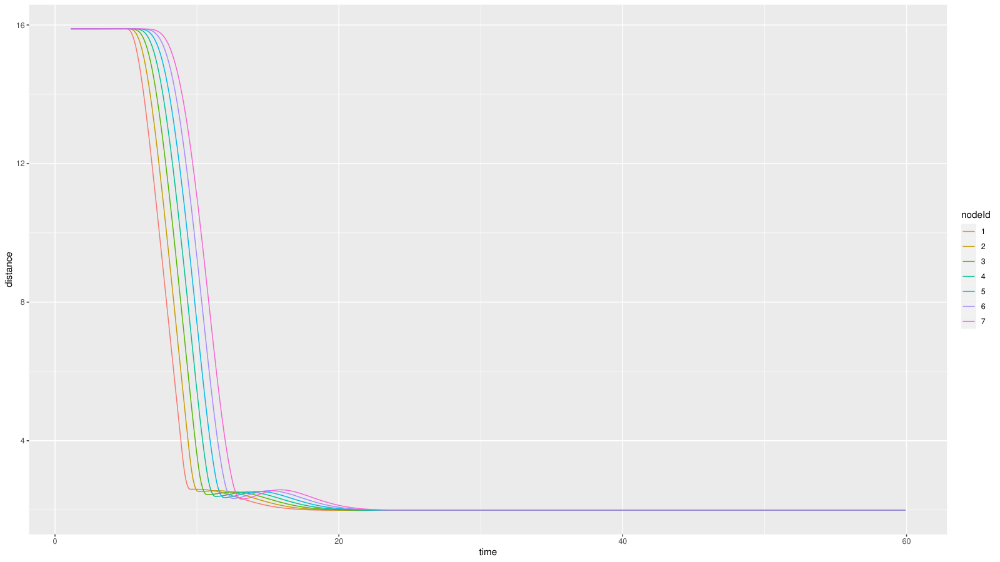
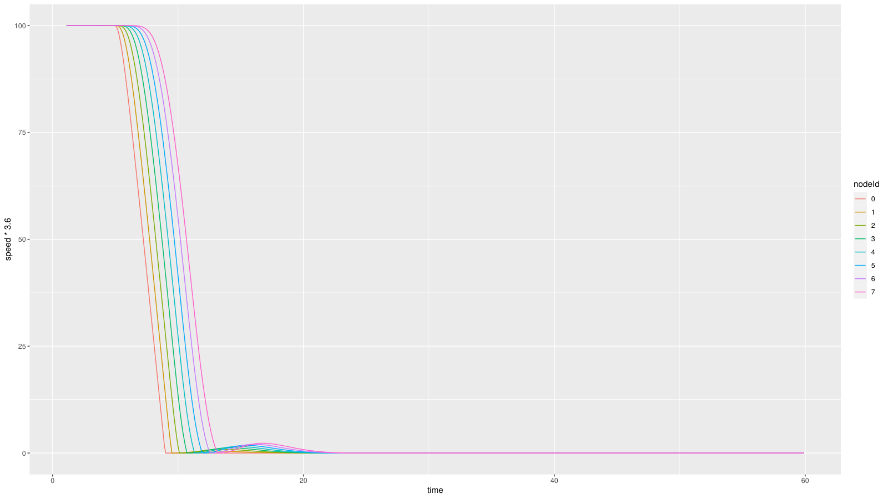
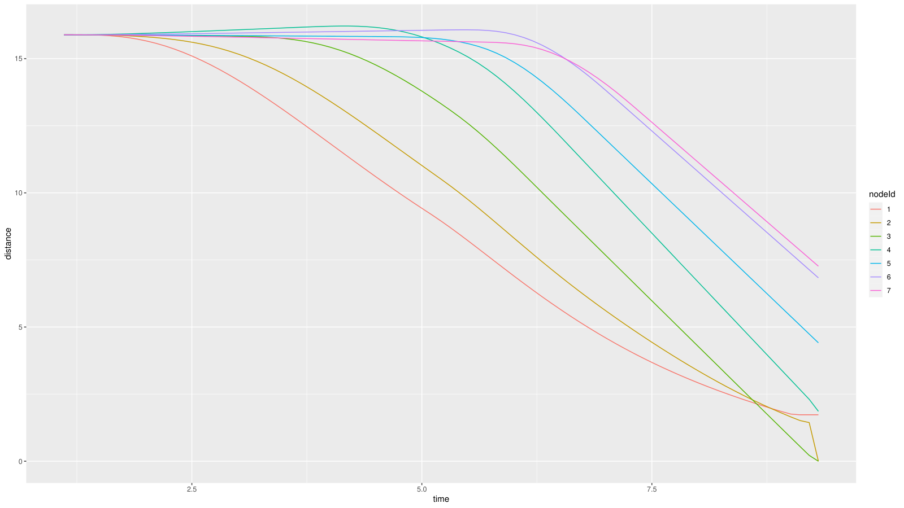
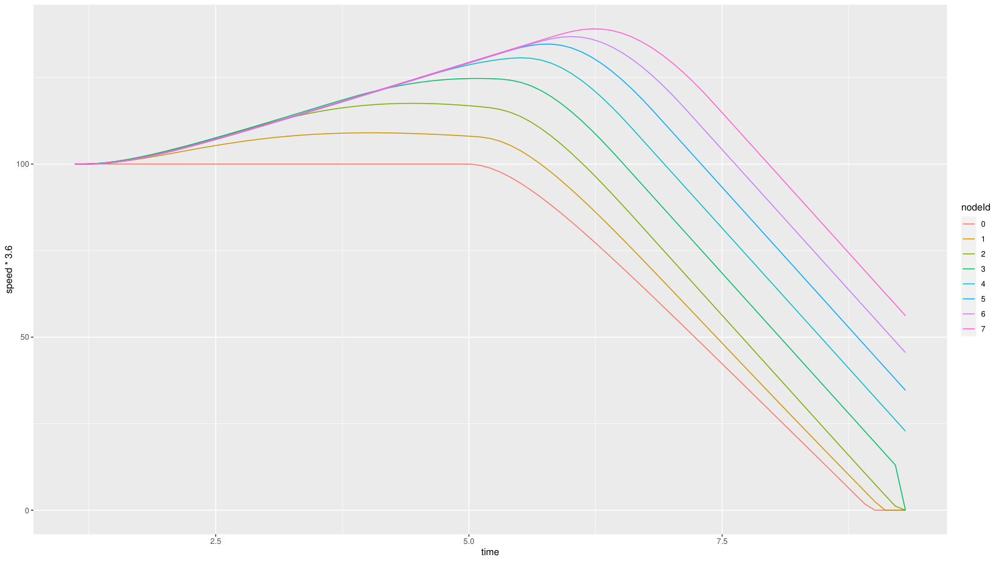
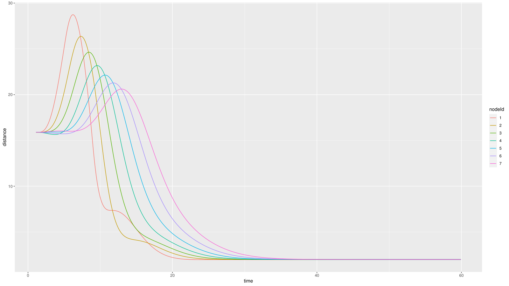
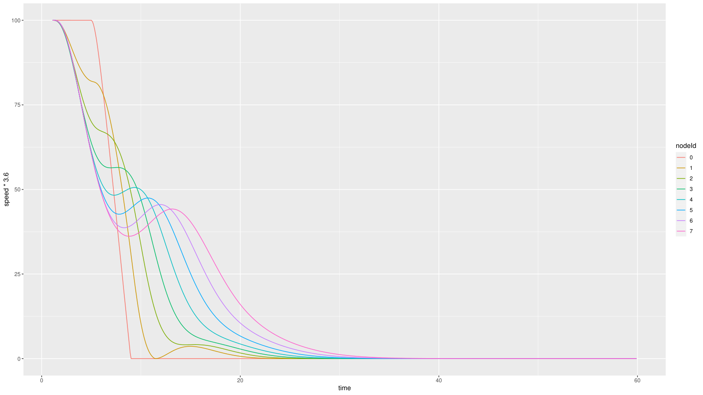

Caso 1 · Variar el tiempo de separación h de Ploeg
Este es el caso guía del manual. Si es tu primera vez con Plexe, empieza aquí. Se cambia un solo número, pero en el camino aparece todo lo que se repite en los demás casos: ubicar un parámetro, correr la simulación correcta, procesar los resultados, graficarlos y compararlos contra un caso base.
Resumen
- Pregunta: ¿qué le pasa al pelotón si los autos se siguen más cerca o más lejos?
- Escenario:
Braking, del ejemploplatooning. Ocho autos avanzan a 100 km/h y, ent = 5 s, el líder frena a 8 m/s². - Controlador: Ploeg.
- Parámetro:
ploegH, el tiempo de separaciónh. - Valores: 0.1 s, 0.5 s y 1.5 s. El de 0.5 s es el valor por defecto y sirve de caso base.
- Qué se toca:
omnetpp.iniy un script de R nuevo. No hay que recompilar.
1 · Antes de empezar
Plexe tiene que estar instalado (ver Instalación). Además, en cada terminal nueva hay que cargar los entornos, en este orden:
# OMNeT++
source ~/src/omnetpp-6.2.0/setenv
# Plexe y Veins
cd ~/src/plexe
. ./setenv
# SUMO, solo si no lo dejaste fijo en ~/.bashrc (ajusta la ruta a tu instalación)
export SUMO_HOME="$HOME/src/sumo-1.22.0"
export PATH="$SUMO_HOME/bin:$PATH"
source, o su forma corta ., ejecuta el archivo dentro de la terminal actual. Por eso las rutas y variables que define quedan disponibles para los comandos siguientes, pero solo en esa terminal.
2 · Fundamentos
Qué es h
Ploeg usa una política de espaciamiento de tiempo constante: la distancia que cada auto quiere mantener con el de adelante crece con su propia velocidad.
2es la distancia en reposo, en metros. Está fija en el código de SUMO.ves la velocidad del propio auto, en m/s.hes el tiempo de separación, en segundos:h·ves lo que el auto recorre enhsegundos a su velocidad actual.
A 100 km/h (27.8 m/s), la distancia deseada queda así:
h |
Distancia deseada |
|---|---|
| 0.1 s | ≈ 4.8 m |
| 0.5 s (por defecto) | ≈ 15.9 m |
| 1.5 s | ≈ 43.7 m |
Qué hace Ploeg
Ploeg es un CACC (control de crucero adaptativo cooperativo). Cada auto combina lo que mide su radar, que es la distancia y la velocidad del auto de adelante, con lo que ese auto le envía por radio: su aceleración deseada. Según el paper de Ploeg, esa anticipación es la que permite usar valores de h bajos sin que las perturbaciones crezcan de un auto al siguiente. A esa propiedad se le llama estabilidad de cuerda (string stability).
h aparece dos veces en el controlador: en la distancia deseada y como constante de tiempo de la ley de control. Con h bajo el controlador reacciona más rápido, y con h alto, más lento. La ley completa está en Controladores › Controlador Ploeg.
El líder no usa Ploeg
En el ejemplo platooning, el líder (auto 0) siempre usa ACC. Cambiar h solo afecta a los autos 1 a 7.
Qué esperamos ver
hbajo: un pelotón compacto, que ocupa menos espacio en la vía, pero con menos margen para reaccionar.halto: más distancia y reacciones más suaves, a cambio de ocupar más espacio.
3 · Dónde vive cada cosa
| Qué | Dónde | En este caso |
|---|---|---|
El valor de h |
~/src/plexe/examples/platooning/omnetpp.ini, línea *.node[*].scenario.ploegH |
Se cambia |
| Qué controlador usa cada corrida | El mismo archivo, líneas **.numericController y **.traffic.controller |
Solo se lee |
| La distancia con que se insertan los autos | El mismo archivo, línea **.traffic.platoonInsertHeadway |
Se ajusta en la sección 6 |
| La fórmula de Ploeg | SUMO, src/microsim/cfmodels/MSCFModel_CC.cpp, función _ploeg() |
No se toca |
La idea clave: ¿parámetro o código?
Cambiar un valor, como h, se hace en omnetpp.ini, y basta con volver a correr la simulación. Cambiar la ecuación obliga a editar C++ y recompilar. Este caso solo cambia un valor. Más detalle en Qué hacer cuando modificas algo. El recorrido del valor, desde el .ini hasta SUMO, está en Dónde viven los controladores.
4 · Implementación paso a paso
Paso 1 · Identificar la corrida de Ploeg
El escenario Braking no prueba un controlador, sino seis, uno por corrida. Abre la configuración del ejemplo:
cd ~/src/plexe/examples/platooning
code omnetpp.ini # o cualquier editor, por ejemplo: nano omnetpp.ini
Y busca estas líneas:
**.numericController = ${controller = 0, 0, 1, 2, 3, 4}
**.headway = ${headway = 0.3, 1.2, 0.1, 0.1, 0.1, 0.1 ! controller}s
**.traffic.controller = ${sController = "ACC", "ACC", "CACC", "PLOEG", "CONSENSUS", "FLATBED" ! controller}
${nombre = a, b, c}es una variable de iteración: OMNeT++ crea una corrida por cada valor.! controllerhace que la variable avance junto concontroller, en vez de combinarse con ella. Por eso son 6 corridas y no 36.- Las corridas se numeran desde 0. Ese número es el que se pasa con
-r.
Corrida (-r) |
Controlador | Archivo de resultados |
|---|---|---|
| 0 | ACC (0.3 s) | Braking_0_0.3_0.vec |
| 1 | ACC (1.2 s) | Braking_0_1.2_0.vec |
| 2 | CACC | Braking_1_0.1_0.vec |
| 3 | PLOEG | Braking_2_0.1_0.vec |
| 4 | CONSENSUS | Braking_3_0.1_0.vec |
| 5 | FLATBED | Braking_4_0.1_0.vec |
El número de corrida no es el número del controlador
Ploeg es la corrida -r 3, pero su archivo se llama Braking_2_.... El nombre sale de output-vector-file = ${resultdir}/Braking_${controller}_${headway}_${repetition}.vec, que usa el valor de ${controller} (2), no el número de corrida (3). El 0.1 es el valor de headway de esa corrida, pensado para los ACC.
Paso 2 · Correr el caso base
Sin cambiar nada (h = 0.5 s):
cd ~/src/plexe/examples/platooning
# Con la ventana de SUMO, para mirar
./run -u Cmdenv -c Braking -r 3
# Sin ventanas, más rápido
./run -u Cmdenv -c BrakingNoGui -r 3
-u Cmdenvcorre OMNeT++ en la terminal, sin su interfaz gráfica.-celige la sección del.ini.Brakingabresumo-guipara ver a los autos;BrakingNoGuiusasumo, sin ventanas.-r 3elige la corrida de Ploeg.
Las dos opciones escriben el mismo archivo, results/Braking_2_0.1_0.vec.
Paso 3 · Procesar los resultados
cd ~/src/plexe/examples/platooning/analysis
genmakefile.py parse-config > Makefile # solo la primera vez
make Braking.Rdata
Rscript plot-braking.R
genmakefile.pygenera elMakefilea partir deparse-config, que dice qué resultados leer y cómo nombrar las columnas.make Braking.Rdataconvierte los.vecdeBrakingen un solo archivo,results/Braking.Rdata, más cómodo de cargar en R.makesin argumentos procesa tambiénSinusoidal.Rscript plot-braking.Rgenera los cuatro PDF estándar enanalysis/:braking-speed.pdf,braking-distance.pdf,braking-acceleration.pdfybraking-controller-acceleration.pdf.
El recorrido completo de los datos está en Arquitectura › El flujo de datos de una simulación.
Ver los PDF desde Windows
Si usas WSL, explorer.exe . abre la carpeta actual en el explorador de Windows.
Paso 4 · Graficar solo Ploeg
plot-braking.R grafica todos los controladores que encuentra en results/. Si antes corriste las seis corridas, Ploeg queda mezclado con los demás. La solución es un script propio: se copia el original, para no modificarlo, y la copia se deja solo con Ploeg.
cd ~/src/plexe/examples/platooning/analysis
cp plot-braking.R plot-braking-ploeg.R
code plot-braking-ploeg.R
Reemplaza su contenido por este:
plot-braking-ploeg.R
#load ggplot for quick and dirty plotting
library(ggplot2)
cntr = c(
"ACC (0.3 s)",
"ACC (1.2 s)",
"CACC",
"PLOEG",
"CONSENSUS",
"FLATBED"
)
#map controller id to name
controller <- function(id, headway) {
ifelse(id == 0,
ifelse(headway < 1, cntr[1], cntr[2]),
cntr[id+2]
)
}
load('../results/Braking.Rdata')
allData$controllerName <- controller(allData$controller, allData$headway)
# --- QUEDARSE SOLO CON PLOEG ---
ploegData <- subset(allData, controllerName == "PLOEG")
ploegData$nodeId <- factor(ploegData$nodeId)
# --- ARMAR LOS 4 GRAFICOS (SIN 6 PANELES) ---
p.speed <- ggplot(ploegData, aes(x=time, y=speed*3.6, col=nodeId)) +
geom_line()
p.distance <- ggplot(subset(ploegData, distance != -1), aes(x=time, y=distance, col=nodeId)) +
geom_line()
p.accel <- ggplot(ploegData, aes(x=time, y=acceleration, col=nodeId)) +
geom_line()
p.caccel <- ggplot(ploegData, aes(x=time, y=controllerAcceleration, col=nodeId)) +
geom_line()
# --- UN SOLO PDF, 4 PAGINAS ---
pdf("braking-ploeg.pdf", width=16, height=9)
print(p.speed)
print(p.distance)
print(p.accel)
print(p.caccel)
dev.off()
Qué hace, por partes:
- Nombres.
cntrycontroller()vienen del script original. Traducen el número del controlador a su nombre, y usan elheadwaypara distinguir los dos ACC. - Datos.
load(...)carga la tablaallDatadesderesults/Braking.Rdata. - Filtro.
subset(...)se queda solo con las filas de Ploeg. - Gráficos. Cuatro gráficos contra el tiempo, con una línea por auto (
nodeId): velocidad en km/h, distancia al auto de adelante, aceleración real y aceleración pedida por el controlador. En la distancia se descarta el valor-1, que corresponde al líder, porque no tiene auto adelante. - Salida. Un solo archivo,
braking-ploeg.pdf, con los cuatro gráficos en cuatro páginas.
Genera el PDF y guárdalo con otro nombre, porque es tu caso base:
Paso 5 · Cambiar h
En omnetpp.ini, cambia el valor de ploegH:
# Antes (por defecto)
*.node[*].scenario.ploegH = ${ploegH = 0.5}s
# Después
*.node[*].scenario.ploegH = ${ploegH = 0.1}s
Luego repite la simulación y el gráfico:
cd ~/src/plexe/examples/platooning
./run -u Cmdenv -c BrakingNoGui -r 3
cd analysis
make Braking.Rdata
Rscript plot-braking-ploeg.R
cp braking-ploeg.pdf braking-ploeg-0.1.pdf
Haz lo mismo con 1.5 y, al terminar, deja otra vez 0.5.
Cada corrida reemplaza a la anterior
El nombre del archivo de resultados no incluye ploegH, así que Ploeg escribe siempre en Braking_2_0.1_0.vec. Genera y guarda el PDF antes de cambiar h otra vez.
5 · Resultados
Estos gráficos son las dos primeras páginas de cada PDF. En el eje vertical, speed * 3.6 es la velocidad en km/h y distance es la distancia al auto de adelante en metros. El eje horizontal es el tiempo en segundos, y cada color es un auto (nodeId).


- Hasta
t = 5 sno pasa nada: las distancias se mantienen en 15.9 m, la distancia deseada a 100 km/h. - Cuando el líder frena, cada auto frena un poco después que el de adelante.
- Hacia
t ≈ 12 sestán todos detenidos, a unos 2 m entre sí: la distancia en reposo.


- Los autos se mueven antes del frenado. Parten a 15.9 m, pero ahora quieren estar a unos 4.8 m, así que aceleran para acercarse. Cada uno acelera más que el de adelante: llegan a entre 110 y 140 km/h, más rápido mientras más atrás van.
- Cuando el líder frena, los de atrás van más rápido que él y cada vez más cerca. Las distancias se desploman.
- Cerca de
t = 9.3 s, la distancia de los autos 2 y 3 llega a 0 y la simulación termina antes de tiempo: hubo un choque.


- Los autos también se mueven antes del frenado, pero al revés: parten a 15.9 m y quieren estar a unos 43.7 m, así que frenan. En
t = 5 sya van a entre 70 y 82 km/h, mientras el líder sigue a 100. - Cuando el líder frena, cada distancia sube hasta un máximo y después baja. Los máximos disminuyen hacia la cola: unos 29 m en el auto 1 y unos 21 m en el auto 7.
- El pelotón queda detenido recién hacia
t ≈ 30 s, contrat ≈ 12 sen el caso base.
Lo que de verdad muestran estos gráficos
Con h = 0.1 s y h = 1.5 s, los autos se mueven antes de que el líder frene. La razón es que el ejemplo inserta los autos ya separados para h = 0.5 s. Al cambiar solo ploegH, el pelotón parte fuera del equilibrio y dedica los primeros segundos a reacomodarse. Por eso estos gráficos mezclan dos efectos: el reacomodo y la respuesta al frenado. El choque con h = 0.1 s ocurre cuando el frenado sorprende a los autos acelerando para acercarse, y no prueba por sí solo que ese valor sea inseguro.
6 · Partir del equilibrio
Para medir solo el efecto de h, los autos tienen que insertarse ya a la distancia que corresponde al nuevo valor. Eso lo define esta línea de omnetpp.ini, que tiene un valor por controlador. El cuarto es el de Ploeg:
# Por defecto, preparado para h = 0.5 s
**.traffic.platoonInsertHeadway = ${0.3, 1.2, 0, 0.5, 0.8, 0 ! controller}s
# Para h = 0.1 s
**.traffic.platoonInsertHeadway = ${0.3, 1.2, 0, 0.1, 0.8, 0 ! controller}s
La distancia en reposo de la inserción (platoonInsertDistance) ya es de 2 m para Ploeg, la misma del controlador, así que no hay que cambiarla. Con este ajuste, las curvas deberían quedar planas hasta t = 5 s, como en el caso base, y la diferencia entre valores de h aparecería solo en el frenado.
Pendiente: los tres valores en una sola ejecución
Editar ploegH a mano sirve para aprender, pero obliga a correr tres veces y a guardar cada PDF entre corridas. La alternativa es una sección propia en omnetpp.ini que fije Ploeg, recorra ${ploegH = 0.1, 0.5, 1.5}, ajuste la inserción e incluya ploegH en el nombre de los archivos. Se documentará cuando esté probada.
7 · La receta general
Todos los casos siguientes repiten estos pasos:
- Ubicar el parámetro: en qué archivo y en qué línea vive.
- Identificar la configuración (
-c) y la corrida (-r) que interesan. - Correr el caso base y guardar sus gráficos.
- Cambiar el valor, volver a correr, procesar y guardar los gráficos con otro nombre.
- Revisar el punto de partida: que el cambio no deje la simulación fuera del equilibrio.
- Comparar contra el caso base.
Errores frecuentes
| Síntoma | Causa | Solución |
|---|---|---|
command not found al usar opp_run o genmakefile.py |
No se cargaron los entornos en esa terminal | Repite los comandos de Antes de empezar |
make dice que el Makefile se generó para otra versión de OMNeT++ |
El Makefile viene de otra instalación |
Vuelve a generarlo con genmakefile.py parse-config > Makefile |
| En los gráficos aparecen otros controladores | Hay resultados de otras corridas en results/ |
Usa plot-braking-ploeg.R, que filtra Ploeg |
Los resultados de un h borraron los del anterior |
El nombre del .vec no incluye ploegH |
Guarda el PDF antes de cambiar h |
Los autos aceleran o frenan antes de t = 5 s |
La inserción corresponde a otro h |
Ajusta platoonInsertHeadway (sección 6) |
8 · Siguiente paso
El Caso 2 aplica la misma receta a un parámetro que ya no es del controlador, sino de la radio: la potencia de transmisión.